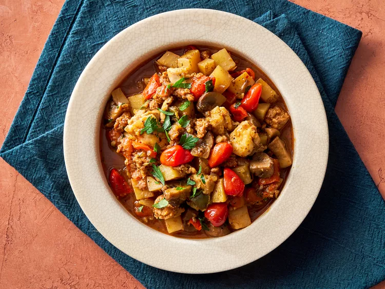

Chicken murphy
Chicken Murphy is a hearty and flavor-packed stew made with Italian sausage, chicken thighs, potatoes, mushrooms, and sweet and spicy Peppadew peppers in a delicious garlic and white wine sauce. It’s comfort food with a kick!

Intredient
- 1 pound bulk Italian sausage
- 1 pound skinless, boneless chicken thighs, cut into 1-inch cubes
- 1/4 cup all-purpose flour
- 2 tablespoons olive oil, divided
- 1 pound cremini mushrooms, quartered
- 1 onion, chopped
- 1 pepper red bell pepper, cut into 3/4-inch pieces
- 1 green bell pepper, cut in 3/4-inch pieces
- 3 cloves garlic, minced
- 1 1/2 pounds russet potatoes, scrubbed and cubed into 1/2-inch pieces